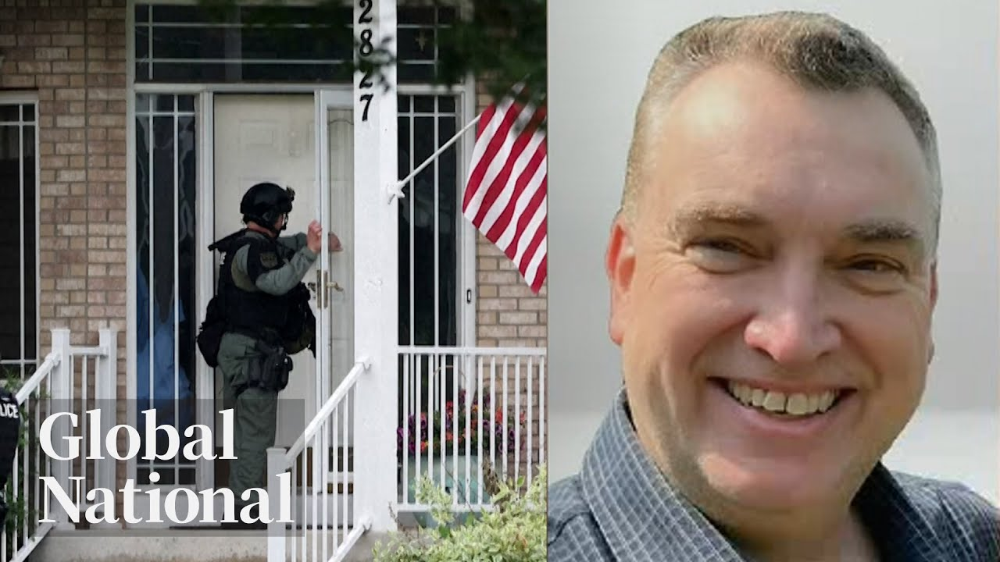

【Global News：明尼苏达州议员枪击案嫌疑人身份确认｜以色列与伊朗冲突升级｜美国国内政治动荡加剧国际紧张局势｜2025-06-14】
Summary: A double murder in Minnesota targets state lawmakers amid nationwide protests, while international tensions rise over Israel-Iran conflict and US political unrest.
摘要： 明尼苏达州发生双重谋杀案，目标为州议员，全美抗议活动持续；以色列与伊朗冲突升级，美国国内政治动荡加剧国际紧张局势。

⏱️ Estimated Reading Time: 32 min
📚 六级生词 📚 雅思生词 📚 托福生词 📚 专八生词 📚 SAT生词 📚 考研生词 📚 GRE生词 📚 高考生词
[Music] On this Saturday night, a double murder in Minnesota.
[音乐] 这个周六晚上，明尼苏达州发生一起双重谋杀案。
An unspeakable tragedy has unfolded.
一场难以言喻的悲剧已经发生。
Police say a state senator and the House Speaker were targeted in a planned political attack.
警方称，一名州参议员和众议院议长成为一场有预谋的政治袭击目标。
The suspect's trail of violence and a hit list of nearly 70 names.
嫌疑人留下暴力痕迹，并有一份近70人的暗杀名单。
This was an act that targeted political violence.
这是一起针对政治暴力的行为。
The Middle East on edge.
中东局势紧张。
How Israel strikes on Iran leaves US diplomacy in jeopardy.
以色列对伊朗的袭击使美国外交陷入危机。
I think this is taking aim at sabotaging diplomacy.
我认为这是在蓄意破坏外交。
On the eve of the G7 summit, Canada hosts the UK's prime minister for a private dinner.
G7峰会前夕，加拿大总理与英国首相举行私人晚宴。
The push to strengthen historic ties amid global uncertainty.
在全球不确定性中努力加强历史性纽带。
And the crossber pub rivalry adding to the excitement for game five in Edmonton as the Oilers return to home ice.
埃德蒙顿油人队回归主场，酒吧间的竞争为第五场比赛增添激情。
Global National reporting tonight, Mitu Gar.
今晚由米图·加尔为您播报《全球国家》。
Good evening and thanks for joining us.
晚上好，感谢您的收看。
A manhunt is underway in the state of Minnesota tonight after a series of deadly shootings targeting two state lawmakers.
明尼苏达州正展开大规模搜捕，此前两名州议员遭遇致命枪击。
One Democratic politician, a former House Speaker, has already been killed along with her husband at their home.
一名民主党前众议院议长与丈夫在家中遇害。
Another Democratic senator has been injured alongside his wife.
另一名民主党参议员与妻子受伤。
Police are now looking for a 57-year-old man believed to have perpetrated what's being called a politically motivated assassination.
警方正追捕一名57岁男子，涉嫌实施政治动机的暗杀。
It's all happening against a backdrop of nationwide protests transpiring across the US today.
事件背景是全美各地爆发的抗议活动。
We'll have more on that later, but for now, Jackson Prosco begins our coverage and joins us from Washington.
稍后将详细报道，现在由华盛顿的杰克逊·普罗斯科带来最新消息。
Jackson, what do we know so far?
杰克逊，目前有哪些信息？
Well, Neu, that manhunt is still underway tonight, and police warned the suspected gunman is both armed and dangerous.
纽，搜捕仍在进行，警方警告嫌疑人携带武器且极度危险。
The FBI has released photos showing the suspect in a mask posing as a police officer in what appears to be a targeted act of political violence.
FBI公布照片显示嫌疑人伪装成警察，疑似针对政治人物的暴力行为。
The shootings unfolded in the Minneapolis suburbs.
枪击发生在明尼阿波利斯郊区。
First at the home of State Senator John Hoffman and his wife.
首先是州参议员约翰·霍夫曼夫妇的住所。
Later, when police went to check on the safety of the top Democrat in the state legislature, Melissa Hortman, they encountered a man at her home who opened fire.
随后警方检查州议会民主党领袖梅丽莎·霍特曼安全时，遭遇其家中一名男子开枪。
The suspect escaped.
嫌疑人逃脱。
Hortman and her husband were found dead.
霍特曼与丈夫被发现身亡。
My good friend and colleague, Speaker Melissa Hortman and her husband Mark, were shot and killed early this morning in what appears to be a politically motivated assassination.
我的好友兼同事霍特曼议长与丈夫马克今晨遭枪杀，疑似政治暗杀。
Police later identified the suspect as 57-year-old Vance Bolter.
警方确认嫌疑人为57岁的万斯·博尔特。
They say he dressed like a police officer and drove an SUV with emergency lights.
他伪装成警察并驾驶装有警灯的SUV。
Bolter works for a security company and advertises his extensive firearms training.
博尔特就职于安保公司，自称接受过专业枪械训练。
If they were in this room, you would assume that they are a police officer.
若在场你会误以为他是警察。
The suspect exploited the trust of our uniforms that our uniforms are meant to represent.
嫌疑人滥用了警服代表的公信力。
The search touched off a widespread manhunt.
搜捕行动大规模展开。
Investigators say they recovered a manifesto from the suspect's vehicle containing an apparent hit list.
调查人员在嫌疑人车内发现含暗杀名单的宣言书。
The nearly 70 names include top state and federal Democrats, abortion providers, and pro-choice advocates.
近70人名单包括州/联邦民主党高层、堕胎服务者和选择权支持者。
This is the latest in a long string of attacks targeting American politicians.
这是针对美国政客的最新连环袭击。
US President Donald Trump, who has faced multiple assassination attempts himself, said such horrific violence will not be tolerated in the United States of America.
曾遇多次暗杀的特朗普总统称美国不容忍此类暴行。
Former Congresswoman Gabrielle Gfords, who survived a 2011 assassination attempt, said an attack against lawmakers is an attack on American democracy itself.
2011年枪击幸存者前众议员加布里埃尔·吉福兹称袭击议员即攻击美国民主。
Investigators say they found dozens of pieces of paper with the message, no kings, in the suspect's car.
调查人员在车内发现多张写有"不要国王"的纸张。
That's a reference to the anti-Trump rallies taking place across the United States today.
这呼应了全美反特朗普抗议活动。
And there was so much concern about the potential for more violence that all of the no kings rallies in the state of Minnesota were cancelled as a precaution.
因担忧暴力升级，明尼苏达州所有抗议活动被预防性取消。
Neu, much more to learn as new details arise.
纽，更多细节有待披露。
Thanks for that, Jackson Prosco in Washington.
感谢华盛顿的杰克逊·普罗斯科。
As Jackson mentioned, nationwide protests are happening across the US right now for what's being dubbed No Kings Day.
如杰克逊所述，全美正爆发"无王日"抗议。
Pushing back against President Trump's large and controversial military parade in the US capital tonight.
抗议针对特朗普今晚在首都举行的争议性阅兵。
[Applause] The rare display of America's military features thousands of troops celebrating the US Army's 250th birthday.
[掌声] 罕见阅兵展示数千士兵庆祝美军建军250周年。
It also coincides with Trump's 79th birthday.
当天也是特朗普79岁生日。
The celebration has met a barrage of criticisms from its $45 million price tag to what many see as an inappropriate use of the military.
活动因4500万美元开销及被指滥用军队遭批评。
On top of that parade, the nationwide No Kings demonstrations are aimed at denouncing Trump's policies, including his recent crackdown on immigration, which organizers are calling authoritarian actions.
抗议活动同时谴责特朗普移民政策等被组织者称为专制的行为。
Candace Cole has more on the movement and the military pomp in Washington.
坎迪斯·科尔将带来华盛顿阅兵与抗议的详细报道。
This is what democracy looks like.
这就是民主的模样。
From coast to coast, some 2,000 No Kings protests are happening across the United States in opposition to Saturday evening's military parade to commemorate the US Army's 250th birthday.
全美约2000场抗议反对纪念美军建军250周年的阅兵。
I can remember in 2016 all the propaganda that was put out on North Korea and how they had a show for Kim Jong-un's birthday and all the rockets that they displayed and the nuclear weapons and the West took that as an insult and kind of a threat.
我记得2016年西方批评朝鲜为金正恩生日展示核武是威胁。
Well, I see absolutely no difference in what's happening in DC right now.
如今华盛顿的阅兵与之无异。
It's a rare display pushed for by Trump during his first term in office, not seen in Washington since America claimed victory in the Gulf War in 1991.
这是特朗普首任期推动的罕见阅兵，自1991年海湾战争胜利后首次。
Organizers for No Kings have called Saturday, which is also Flag Day in the United States, a nationwide day of defiance to reject authoritarianism, just days after Trump federalized the National Guard and sent active duty Marines to California to quell protests against ICE raids in Los Angeles.
抗议组织者将周六（美国国旗日）定为全国反专制日，此前特朗普刚派遣现役海军陆战队镇压洛杉矶移民抗议。
Well, I mean, America is about democracy.
美国应是民主的。
What we're seeing right now is not democracy.
当前景象绝非民主。
It's about one person, their ego, their agenda.
这是一人 ego 与议程的体现。
It's it's not really about, you know, The land of the free home with a brave.
与"自由勇士之家"的信念背道而驰。
It's about one person trying to be a king.
这是一人妄图称王。
Demonstrators in DC started a day early.
华盛顿抗议者提前一日行动。
This footage capturing a group of veterans breaking down barricades and rushing the steps of the capital where 60 people were arrested.
视频显示退伍军人冲破路障冲击国会台阶，60人被捕。
While Republican governors in Virginia, Texas, Nebraska, and Missouri preemptively planned to mobilize their National Guard units.
弗吉尼亚等共和党州长已计划动员国民警卫队。
And Thursday, this Florida sheriff threatening protesters who get out of hand.
周四佛罗里达警长警告失控抗议者。
If you throw a brick, a firebomb, or point a gun at one of our deputies, we will be notifying your family where to collect your remains at because we will kill you graveyard dead.
若投掷砖块、燃烧弹或持枪威胁警员，我们将通知家属收尸。
We're not going to play.
我们不会手软。
This has got to stop.
必须制止这种行为。
President Trump has warned that anyone protesting the military parade will be met with heavy force.
特朗普警告抗议阅兵者将遭强力镇压。
Candace Cole, Global News, Washington.
坎迪斯·科尔，全球新闻，华盛顿。
In the Middle East, Iran has launched a new round of retaliatory missile attacks tonight, which has forced Israelis to scramble for cover.
中东地区，伊朗发动新一轮报复性导弹袭击，以色列民众紧急避难。
It comes at the end of a day when Israel widened its attacks on Iran, moving to target oil and gas installations as the leaders of both countries vow to intensify their continued onslaught.
此前以色列扩大袭击范围， targeting伊朗油气设施，两国领导人誓言升级攻势。
The sudden crossfire between regional rivals has sparked international pleas for deescalation.
地区对手的突然交火引发国际社会呼吁降级。
To this point, those have largely been ignored.
目前呼吁基本被无视。
And as Reggie Jacini reports, the one hope for a possible ease in tensions has now collapsed.
据雷吉·雅奇尼报道，缓解紧张的唯一希望已破灭。
Reggie Nu, it seemed inevitable that President Donald Trump's push to get a nuclear deal with Iran would fall apart amid the deepening crisis.
纽，特朗普推动的伊朗核协议在危机深化时破裂似不可避免。
And on Saturday, weekend talks were called off with the Iranians branding dialogue as meaningless.
周六周末会谈取消，伊朗称对话无意义。
The sirens wailed across Tel Aviv early Saturday, warning that something was about to happen.
周六清晨特拉维夫警报长鸣预警。
A hellish glow rose above the site where an Iranian projectile touched down and under the daylight.
伊朗导弹落点处升起地狱般的光芒。
The destruction is immense, underscoring why Israeli officials declared a state of emergency.
巨大破坏促使以色列宣布紧急状态。
It's an awful feeling.
这是可怕的感觉。
You really don't know what's going to happen in the next I wouldn't say next day, next second.
你无法预知下一秒会发生什么。
For each missile launched into Israel, Iran faces a response.
伊朗每发射一枚导弹都将遭反击。
Factories and an airport were hit Saturday as a damaged and weakened air defense system struggles to keep up.
周六工厂与机场遇袭，伊朗受损防空系统难以招架。
And our pilots over the skies of Tehran will deal blows to the regime that they cannot even imagine.
我方飞行员将在德黑兰上空给予政权难以想象的打击。
While civilians were caught up in the 150 or so targets overnight, the Red Crescent claiming 60 in one housing complex alone.
夜间约150个目标波及平民，红新月会称仅一住宅区就有60人伤亡。
Israel is after Iran's nuclear facilities, damaging what they can.
以色列重点打击伊朗核设施。
Can they destroy the component parts of its nuclear weapons program?
能否摧毁其核武计划关键部分？
For the most part, but the knowledge is hard to take away.
大部分可以，但技术知识难以消除。
With pressure building, Iran's leadership stoked fear in Israel's allies, warning ships and bases will be targeted if they help stop Thrron strikes.
压力下伊朗领导人警告以色列盟友若协助拦截将袭击其船只与基地。
The regime is homicidal, but it's probably not suicidal, and to go after the United States directly uh would would be probably provoke a response that would likely mean the end of the regime as we know it.
该政权嗜杀但不至于自杀，直接攻击美国将招致政权覆灭的回应。
America's top diplomat warned Iran to steer clear of US assets, arguing this is Israel's fight, an effort to keep the US out of a conflict far from its borders.
美国高官警告伊朗远离美国资产，称这是以色列的战斗。
Trump came back to office in 2025 stating that he wanted to end kinetic wars.
特朗普2025年就职时宣称要结束热战。
He has not succeeded in doing that and I think this action by Israel uh demonstrates um how unsuccessful he's been.
以色列此次行动显示其未能兑现承诺。
And on Saturday, in a near hour-long conversation, Donald Trump and Russian President Vladimir Putin discussed the situation with Trump reportedly acknowledging what he said was the effectiveness of Israel strikes.
周六特朗普与普京近一小时通话，据报特朗普承认以色列打击的有效性。
And while Moscow condemned them, it offered to act as a mediator with both leaders remaining committed to implementing a nuclear deal with Iran.
莫斯科虽谴责但愿调解，双方仍致力于执行伊朗核协议。
Neu.
纽。
Okay, Reggie Chaini in Washington tonight.
感谢华盛顿的雷吉·柴尼。
Thanks, Reggie.
谢谢雷吉。
The sweeping attacks that started early Friday have raised fears of a wider conflict that could draw in other major global powers.
周五开始的全面袭击引发对大国卷入广泛冲突的担忧。
Eric Sorenson breaks down how we got here and the possible ramifications of the most direct attacks the two regional rivals have ever exchanged.
埃里克·索伦森将分析局势起因及此次最直接交火的潜在影响。
Why now?
为何是现在？
Israel's attack brings international condemnation and a conflict that could engulf the Middle East.
以色列袭击引发国际谴责及可能席卷中东的冲突。
US President Trump repeatedly called on Israel to hold off while the US held talks with Iran.
特朗普多次呼吁以色列在美国与伊朗谈判期间保持克制。
As long as I think there is an agreement, I don't want them going in because I think that would blow it.
只要存在协议可能，我不希望他们行动以免破坏谈判。
Might help it actually, but it also could blow it.
或许有助于谈判，但也可能破坏它。
This analyst says that's why Israel moved now.
分析人士称这正是以色列此刻行动的原因。
I think this is taking aim at sabotaging diplomacy.
我认为这是为了破坏外交努力。
The next round of talks was scheduled this Sunday between the US and Iran.
美伊下一轮谈判原定本周日。
Israel believed more diplomacy would simply give Iran enough time to acquire several nuclear weapons.
以色列认为更多外交斡旋只会给伊朗获取核武的时间。
In Israel's view, additional justification came from the International Atomic Energy Agency, which declared for the first time in 20 years that Iran was not in compliance to ensure nuclear non-prololiferation.
国际原子能机构20年来首次宣布伊朗违反防扩散规定，以方视此为额外依据。
We believe that an action like this um is not compatible with with with the spirit of cooperation.
此类行动不符合合作精神。
And there were military incentives for Israel to act.
以色列行动存在军事动机。
Iran's allies Hezbollah and Hamas have been decimated by Israel.
伊朗盟友真主党与哈马斯遭以色列重创。
As Canada's former chief of defense staff explained on Global's the West block, Iranian proxies have been um neutered.
加拿大前国防参谋长表示伊朗代理人已被削弱。
If you take a look at Hezbollah, um it's no longer an effective force.
真主党已非有效军事力量。
uh Iranian air defense has been reduced and so this was a window of opportunity.
伊朗防空系统被削弱，此时正是机会窗口。
While Arab neighbors have condemned Israel, some like Saudi Arabia may see positives without saying so.
阿拉伯邻国虽谴责以色列，沙特等或暗中认同。
None of the neighboring countries, of course, want Iran to have a bomb.
当然没有邻国希望伊朗拥有核弹。
That's for sure.
这是肯定的。
So, they'll be saying one thing, but they'll be probably quietly saying, "Well, thank goodness they're they're putting that day off.
所以，他们嘴上说一套，但心里可能暗自庆幸：“还好他们把那天取消了。”
They made sure that that's not going to happen anytime soon."
他们确保这种事短期内不会发生。”
The attack also diverts attention from Gaza.
这次袭击也转移了人们对加沙的注意力。
Israel has few friends when it comes to its devastating bombing in that territory.
以色列在该地区的毁灭性轰炸几乎没有赢得任何朋友。
And yet there is tacit support in its standoff with Iran.
但在与伊朗的对峙中，以色列得到了默许的支持。
Iran bears heavy responsibility for the destabilization of the entire region says France's president Macron.
法国总统马克龙表示，伊朗对整个地区的不稳定负有重大责任。
Still Israel has triggered a dangerous confrontation that could last long into the future.
但以色列还是引发了一场可能持续很久的危险对抗。
This is thing that's going to be an issue for the international community to deal with for decades to come.
这将是国际社会未来几十年需要应对的问题。
Eric Sorenson, Global News Toronto.
埃里克·索伦森，多伦多全球新闻。
There are reports the final Mayday call from the Air India flight that crashed lasted for just 5 seconds.
据报道，坠毁的印度航空航班最后的求救信号仅持续了5秒。
Indian media is reporting the pilot said thrust not achieved, falling mayday, seconds before the flight crashed into a medical training center, killing 270 people.
印度媒体报道称，飞行员在飞机撞上医疗培训中心前几秒喊出“推力不足，坠落求救”，事故导致270人遇难。
Today, as crews continued to scour the wreckage for remains, Air India offered to pay the victim's families and the lone survivor $29,000 each.
今天，搜救人员继续在残骸中寻找遗体，印度航空向遇难者家属和唯一幸存者各赔偿2.9万美元。
There will now be a minute of silence to remember those who lost their lives.
现在将进行一分钟默哀，悼念遇难者。
The victims of the deadly Air India crash were honored today with a moment of silence at the Trooping the Color military parade in London.
伦敦的皇家军队阅兵仪式上，人们为印度航空空难遇难者默哀。
The royals also paying tribute to the lives lost by wearing black armbands over their uniforms during the annual event marking the king's official birthday.
王室成员也在纪念国王官方生日的年度活动上佩戴黑纱，向逝者致敬。
Strengthening ties in uncertain times.
在不确定时期加强联系。
Coming up, the private dinner between Canada's PM and his British counterpart ahead of the G7 and how their personal ties could shape the talks to come.
接下来，加拿大总理与英国首相在G7峰会前的私人晚宴，以及他们的个人关系如何影响即将到来的会谈。
World leaders are converging on Canmore ahead of the start of the G7 summit in Alberta tomorrow.
世界领导人正齐聚坎莫尔，为明天在阿尔伯塔举行的G7峰会做准备。
But before the top level talks get underway, Prime Minister Mark Carney will welcome UK Prime Minister Keir Starmer into his home for a private dinner this evening.
但在高层会谈开始前，加拿大总理马克·卡尼今晚将在家里招待英国首相基尔·斯塔默共进私人晚餐。
Carney hopes to have one-on-one meetings with all G7 leaders.
卡尼希望与所有G7领导人进行一对一会议。
But as David Akin reports, the first order of business for Carney and Starmer is reinforcing Canada's and the United Kingdom's close ties.
但据大卫·阿金报道，卡尼和斯塔默的首要任务是加强加拿大与英国的紧密联系。
Days after he became Canada's 24th prime minister, Mark Carney was at 10 Downing, the official residence of UK Prime Minister Keir Starmer.
马克·卡尼成为加拿大第24任总理几天后，就访问了英国首相基尔·斯塔默的官邸唐宁街10号。
And now Carney is repaying the favor, hosting Starmer in Ottawa ahead of an official pre-G7 bilateral meeting Sunday.
现在卡尼回礼，在周日的G7双边会议前于渥太华招待斯塔默。
Starmer really wanted to come here on his way to the G7 to reconnect and have a proper amount of time sat down with Mark Carney.
斯塔默非常希望在前往G7途中来这里与马克·卡尼重新联系并深入交流。
Starmer, whose Labor Party is closest to Canada's Liberals, became PM last July.
斯塔默的工党与加拿大自由党关系最近，他于去年7月成为首相。
Carney has been a PM since March and both quickly saw the value in strengthening historical ties between Canada and the UK.
卡尼自3月起担任总理，两人都迅速认识到加强加英历史联系的价值。
There's a lot of commonality in the issues that we're facing.
我们面临的问题有很多共同点。
Obviously, there are significant differences as well.
当然，也存在重大差异。
But growth, both of our countries, both of our governments are really focused on getting that growth, driving our economies forward.
但增长是我们两国和两国政府真正关注的重点，以推动经济发展。
And both Carney and Starmer understand that instability in global relations brought on by Donald Trump makes ancient alliances even more important.
卡尼和斯塔默都明白，特朗普带来的全球关系不稳定使传统联盟更加重要。
I mean, everybody's looking to diversify their trade away from the US right now because it's just too high of a risk.
现在大家都在寻求贸易多元化，减少对美国依赖，因为风险太高了。
Eugene Lang was once a top liberal adviser during the Cretien and Martin years and he says Carney's time as the governor of the Bank of England and as the spouse of a British national puts him in a unique position vis-a-vis Canada UK relations.
尤金·朗曾是克雷蒂安和马田时期自由党的高级顾问，他表示卡尼担任英国央行行长以及作为英国公民配偶的经历，使他在加英关系中处于独特位置。
Mr. Carney probably has deeper and more personal relations with what I'll call the British governing class than any prime minister in our history.
卡尼与英国统治阶层的关系可能比我国历史上任何总理都更深入和私人化。
And that could pay off in new defense contracts with UK and European suppliers or new commitments from the two countries to support Ukraine or enhanced Canada UK trade and all of that to counter the threat from Donald Trump's America.
这可能带来与英国和欧洲供应商的新国防合同，或两国支持乌克兰的新承诺，或加强加英贸易，以对抗特朗普领导下的美国的威胁。
Nath. Okay, David Akin in Ottawa. Thanks. G3.
好的，大卫·阿金在渥太华报道。谢谢。G3。
A protest was held on Parliament Hill today against Prime Minister Mark Carney's move to invite India's Prime Minister Narendra Modi to the G7 summit despite India not being an official member.
今天国会山举行抗议，反对总理马克·卡尼邀请印度总理纳伦德拉·莫迪参加G7峰会，尽管印度不是正式成员。
Demonstrators from Canada's Sikh community demanded the invite be rescinded following allegations of foreign interference by India's government and the murder of prominent Sikh activist Hardeep Singh Nijjar in 2023.
加拿大锡克教社区的示威者要求撤销邀请，理由是印度政府涉嫌外国干涉以及2023年著名锡克活动分子哈迪普·辛格·尼贾尔被谋杀。
As some of the world's most powerful and prominent leaders head to Alberta in Calgary today, protesters called for a strong show of solidarity at the summit to ensure justice for Ukraine and greater action against Russia.
当世界一些最有影响力的领导人今天前往卡尔加里的阿尔伯塔时，抗议者呼吁峰会上展现强烈团结，确保乌克兰得到公正对待并加大对俄罗斯的行动。
A close call for the moon ahead.
月球面临一次惊险擦肩。
The asteroid on a potential collision course with our nearest neighbor.
一颗小行星可能与我们的近邻月球相撞。
An asteroid formerly considered a threat to hit Earth remains on a potential collision course with the moon.
一颗曾被认为可能撞击地球的小行星现在仍有可能撞击月球。
NASA's latest calculations give Y4 just over a 4% chance of hitting the moon 7 years from now.
NASA最新计算显示，Y4小行星7年后撞击月球的概率略高于4%。
The space agency says those odds aren't trivial.
航天局表示这一概率不容忽视。
And as Vincent McAvinchey reports, the damage could be significant.
文森特·麦卡文奇报道称，破坏可能很严重。
It's roughly the size of a 15-story building.
它大约有15层楼高。
Asteroid 2024 YR4, dubbed the city killer when it was discovered last year, was initially given a 3% chance of striking Earth on the 22nd of December, 2032.
小行星2024 YR4去年发现时被称为“城市杀手”，最初认为有3%的概率在2032年12月22日撞击地球。
New projections from NASA have downgraded that threat to almost zero.
NASA的新预测将该威胁降至几乎为零。
Instead, our nearest neighbor, the moon, may now be in danger.
相反，我们的近邻月球现在可能面临危险。
NASA has upgraded the chances of a lunar collision to 4.3%.
NASA将月球撞击概率上调至4.3%。
Though unlikely, the impact could be visible from Earth and may leave a new lunar crater up to a kilometer in diameter.
尽管可能性不大，但撞击可能从地球可见，并留下直径达一公里的新月球坑。
Objects in space where there is so much space and the chances of hitting everything is extremely low in most circumstances.
太空中有如此多的空间，大多数情况下撞击任何物体的概率都极低。
4% is very high indeed.
4%确实非常高。
Debris from the impact would then rain down on Earth.
撞击产生的碎片将如雨般落向地球。
Whilst most of it would burn up in our atmosphere, it could still create problems.
虽然大部分会在大气层中燃烧，但仍可能造成问题。
This influx of material could damage satellites, communication satellites, weather satellites, spy satellites, and impact the International Space Station.
这些物质可能损坏卫星、通信卫星、气象卫星、间谍卫星，并影响国际空间站。
And there's also the threat that if a satellite, particularly a military satellite that's observing sensitive parts of the Earth is struck, then that might create an air of uncertainty as to whether or not it is a natural event or a hostile event from a foreign power.
还有一个威胁是，如果一颗卫星（尤其是观测地球敏感区域的军事卫星）被击中，可能会引发不确定氛围，无法判断这是自然事件还是外国势力的敌对行为。
If you're wondering if an Armageddon style mission to deflect the asteroid might be possible, some think it's a good idea.
如果你想知道是否可能进行《世界末日》式的偏转小行星任务，一些人认为这是个好主意。
My recommendation for anyone who has the will and the money would be perhaps to investigate the possibility of trying to direct the orbit of this asteroid, whatever the outcome, just to learn something about how we might protect ourselves from future threats.
我对有意愿和资金的人的建议是，或许可以研究尝试改变这颗小行星轨道的可能性，无论结果如何，只为学习如何保护自己免受未来威胁。
The asteroid will soon disappear from observation.
这颗小行星很快将无法观测。
We'll have to wait until it gets closer again in 2028 to see just what chance the moon has of a miss.
我们必须等到2028年它再次接近时，才能知道月球有多大几率躲过撞击。
Vincent McAvinchey, Global News, London.
文森特·麦卡文奇，伦敦全球新闻。
Back on home ice and a step closer to the cup.
回到主场冰场，离奖杯更近一步。
Next, the Edmonton Oilers gear up for a pivotal game five.
接下来，埃德蒙顿油人队为关键的第五场比赛做准备。
The Edmonton Oilers are back home tonight to play a crucial game five against the Florida Panthers.
埃德蒙顿油人队今晚回到主场，对阵佛罗里达黑豹队进行关键的第五场比赛。
With the series tied at two games apiece, Oilers fans are so fired up, it's even sparking rivalries off the ice.
系列赛战成2-2平，油人队球迷热情高涨，甚至在场外也引发了竞争。
Nicole Dubado joins us from outside the rink in Edmonton.
妮可·杜巴多从埃德蒙顿冰场外为我们报道。
Nicole, well, Neu, lots of excitement here in oil country after that game four overtime thriller.
妮可，纽，第四场加时赛的惊险胜利后，油人国充满兴奋。
Both the Oilers and their fans hoping being back home tonight will give the team the boost they need to get this done.
油人队和球迷都希望今晚回到主场能给球队带来完成任务的动力。
And as you can already see behind me, lots of dedicated fans already lined up hoping to get into one of those watch parties here in downtown Edmonton.
如你所见我身后，许多忠实球迷已排起长队，希望进入埃德蒙顿市中心的观赛派对。
Some actually telling me they slept here overnight to secure a spot.
有人告诉我他们在这里过夜以确保位置。
So, lots of dedication, lots of excitement, and it's not just the players battling it out on the ice.
所以，很多奉献精神，很多兴奋，而且不仅是球员在冰上战斗。
There's also some businesses that are getting quite competitive.
一些企业也相当竞争激烈。
Just a short walk from where I am is Kelly's Pub, which has a rivalry brewing with the Bright Side, a bar over in Miami, Florida.
离我不远处是凯利酒吧，它与佛罗里达迈阿密的Bright Side酒吧正在酝酿竞争。
The pubs are in the midst of a social media spat with both arguing they have the better hockey team.
两家酒吧在社交媒体上争论谁拥有更好的冰球队。
The Florida Bar boasting about having the reigning Stanley Cup champ while the Edmonton pub notes the Oilers have won five cups.
佛罗里达酒吧吹嘘拥有卫冕斯坦利杯冠军，而埃德蒙顿酒吧指出油人队赢过五次杯赛。
The bars now have a bet going and the stakes are high.
两家酒吧现在打赌，赌注很高。
If we lose we have to throw on some Panthers garb and sing Mr. Bright Side live streamed on Instagram in front of this entire bar and for Kelly's Pub, Pink Pony Club.
如果我们输了，我们必须穿上黑豹队服装，在Instagram上直播唱《Mr. Bright Side》，而凯利酒吧则要唱《Pink Pony Club》。
Well, for anyone who doesn't know, Pink Pony Club has become a winning anthem for the Oilers throughout their Cup run.
对于不了解的人，《Pink Pony Club》已成为油人队杯赛征程中的胜利赞歌。
And this rivalry, it's all in good fun.
这种竞争纯属好玩。
Both clubs are just hoping to boost team spirit in their respective cities.
两家酒吧都希望提升各自城市的团队精神。
And clearly, it's already working as you just saw and heard.
显然，正如你刚才所见所闻，这已经奏效。
Now, if the Oilers win tonight's game, they'll be one win away from hoisting the cup.
如果油人队今晚获胜，他们将离举起奖杯只差一场胜利。
Me too. All right, great energy where you are.
我也是。好的，你那里能量很棒。
Nicole Dubado outside Rogers Place in Edmonton. Thanks, Nicole.
妮可·杜巴多在埃德蒙顿罗杰斯广场外报道。谢谢，妮可。
And that is Global National for this Saturday night.
以上就是本周六晚的全球国家新闻。
I'm Nitu Gara.
我是尼图·加拉。
Tonight's your Canada showcases a clavic northwest territories, main island, BC, and Mile Lake, Saskatchewan.
今晚的“你的加拿大”展示了西北地区、BC省梅恩岛和萨斯喀彻温省迈尔湖。
Keep them coming.
请继续发送。
Send your pictures of Canadian Pride to Global National at globalnews.ca.
将你的加拿大骄傲照片发送至globalnews.ca的全球国家栏目。
Thanks for watching and hope you'll join us again tomorrow.
感谢观看，希望明天再次相聚。
Have a great night.
晚安。